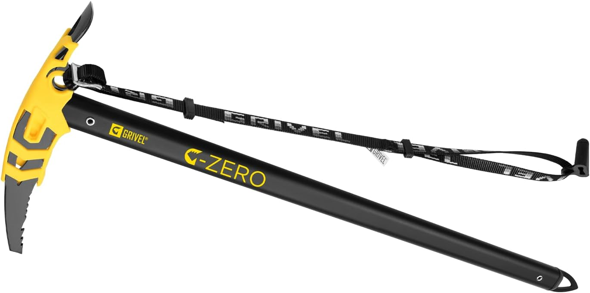

雪山ギア
Grivel (グリベル) Gゼロ EVO

雪山登山において命を守る必携ギア「ピッケル」。Grivel（グリベル）の「Gゼロ EVO」は、初めて雪山縦走に挑む方からステップアップを目指す登山者まで幅広く支持されるストレートシャフトの定番モデルです。
主な特徴とスペック
| ブランド | Grivel（グリベル） |
|---|---|
| モデル名 | Gゼロ EVO (GV-PIGZELE) |
| ヘッド素材 | 鍛造炭素鋼（カーボンホールプロテクター付き） |
| タイプ | ストレートシャフト（一般ルート・縦走向け） |
| 付属 | プロテクター兼用のヘッドカバー、ロングリーシュ |
実際に使用してみてのインプレッション
最大の特徴は、ヘッド部分に取り付けられた樹脂製プロテクターです。ピッケルをダガーポジションや杖代わりに握って歩く際、冷たい金属に直接触れずに済むため、素手や薄手グローブ時の冷えを大幅に軽減してくれます。
鍛造炭素鋼製のピックは氷雪面へ滑らかかつ確実に刺さり、初期付属のロングリーシュによって滑落防止の保持も容易です。扱いやすいシンプルなストレートデザインは、雪山歩行技術の基礎を身につける最初の1本として最適です。